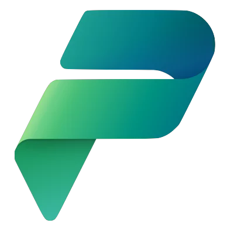
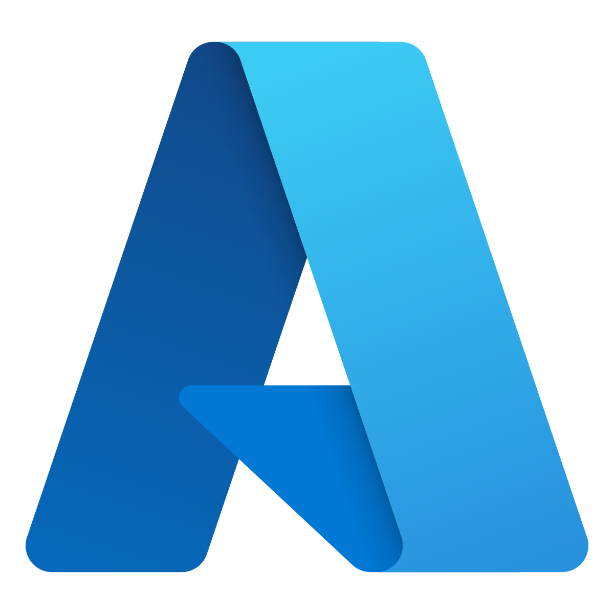
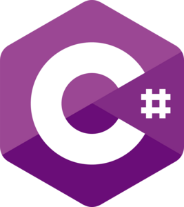
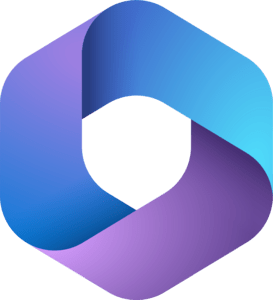
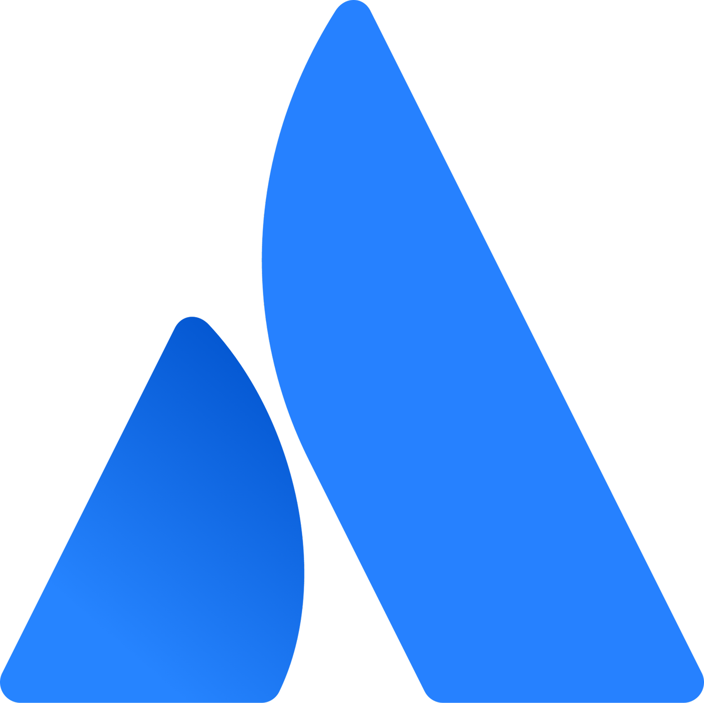

Honesty
One of the keys to any successful collaboration is being honest and transparent with each other. Few things are more frustrating for me than the absence of honesty.
People. Technology. Progress.
Cloud Solutions Architect | Consultant | Microsoft Enthusiast
| keep evolving |
My mission is to empower people and support them to find fulfilment at work, increasing productivity, transparency and satisfaction. I am achieving this by nurturing an agile mindset and using the newest technologies to improve workflows.
“Change is the only constant.”
01 / What drives me
The principles behind the way I work,
collaborate and keep growing.
One of the keys to any successful collaboration is being honest and transparent with each other. Few things are more frustrating for me than the absence of honesty.
Increasing productivity and being productive myself is one of my primary drives. I find this to be one of the main contributors to motivation and business value.
As today's technology landscape is ever-changing, there is no place for a rigid mindset. When circumstances change, the solution needs to change too. Being a lifelong learner is a necessity.
Often misunderstood, sustainability is more than only its ecological aspect. To create sustainable solutions, economic and social implications need to be taken into consideration. Striving to satisfy every pillar is the goal.
Without responsibility there are no decisions and therefore no progress. Responsibility goes both ways: as a leader you need to give responsibility to your employees, and as an employee you need to take it on.
A trait that needs cultivating but often gets neglected in favour of purely analytical thinking in tech. It is fundamental for communication, UX design and finding completely new ways of doing things.
02 / Tools of the trade
Connecting ideas with the right technology.

Power Platform
Azure
.NET C#
Microsoft 365
Atlassian
GitHub03 / Always learning
Technical expertise. An agile mindset.
A commitment to keep evolving.
Technology
Ways of working
Better processes. More transparency.
People empowered to do their best work.
Let's keep evolving